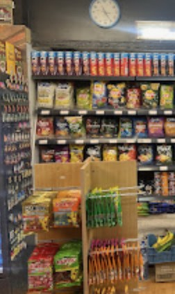

Boissons fraîches
Eaux, sodas, jus, boissons énergisantes
Du café du matin à la boisson fraîche de minuit, l'essentiel est là. L'assortiment évolue selon les arrivages.
Eaux, sodas, jus, boissons énergisantes
Chips, crackers, biscuits apéro
Bonbons, chocolats, chewing-gums
Bananes, pommes et l'essentiel du frais
Pâtes, riz, conserves, sauces, épices
Café, thé, céréales, pain de mie, confiture
Lait, beurre, yaourts, fromages
Dentifrice, mouchoirs, piles, essuie-tout

Écrivez-nous pour savoir si un produit est en rayon. Et si vous êtes dans le quartier, passez directement : c'est ouvert jusqu'à 2h.